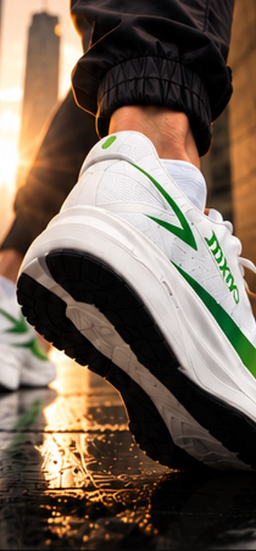
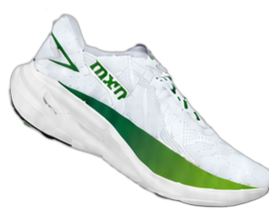
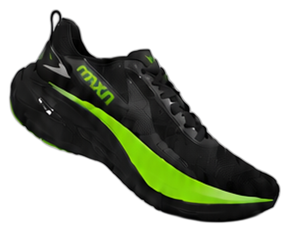
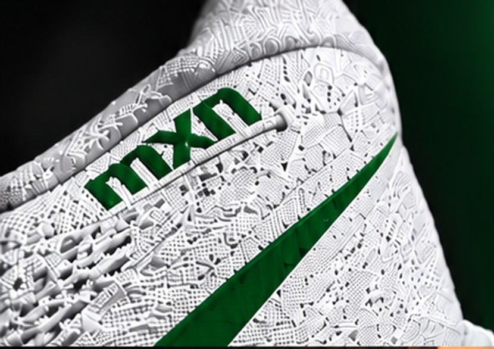

Há 20 anos,
começamos uma jornada.
Crescemos. Evoluímos.
Seguimos em frente.
E nunca caminhamos sozinhos.
Em muitos desses passos,
Você esteve conosco.
Este presente é uma forma de agradecer
a quem faz parte da nossa história.

Mais
saúde
saúde
Mais
histórias
histórias
Mais
conquistas
conquistas
Mais
juntos
juntos

Branco

Preto
Movimento
que impulsiona
o amanhã.
Mais que um tênis.
Um símbolo da nossa
jornada ao seu lado.

-
ConfortoPara ir cada vez mais longe.
-
PerformancePara novos desafios.
-
QualidadeQue acompanha o seu ritmo.
-
PropósitoMais saúde para mais pessoas.
Uma história
feita de pessoas.
Cada conquista da Maxinutri
só foi possível porque tivemos
você ao nosso lado.
Obrigado por caminhar
com a gente.
Vamos seguir juntos?
Esse é o nosso jeito de dizer obrigado
por fazer parte da nossa história.
Mesmo
caminho.
Mais
conquistas.
maxinutri
orgulho em cuidar e nutrir